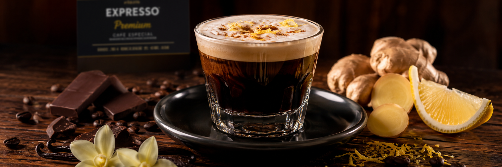
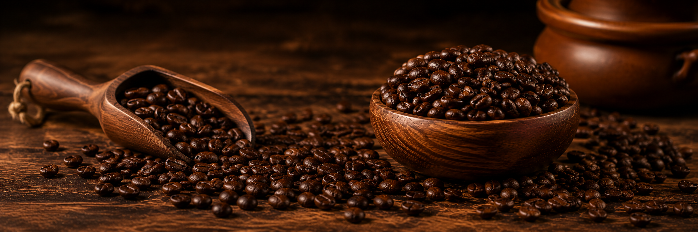
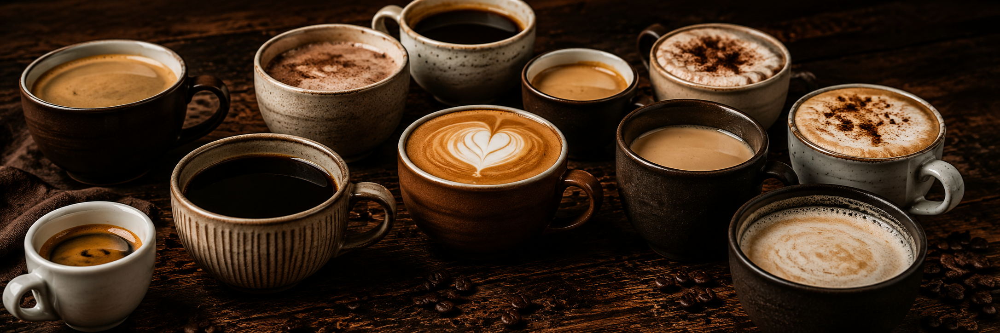

Destaque do mês:

Café expresso premium
Produzido com grãos selecionados, nosso Café Expresso Premium revela um corpo marcante, notas naturais de chocolate e um delicado aroma de baunilha. A finalização com espuma de gengibre e raspas de limão acrescenta frescor e complexidade, criando uma combinação única de sabores. Um equilíbrio perfeito entre intensidade, doçura e acidez que conquistou o paladar dos nossos clientes e tornou este expresso um dos mais pedidos da casa.
Nossos métodos de extração:

Cada método de extração revela características únicas dos nossos grãos especiais. Escolha a técnica que mais combina com o seu paladar e descubra uma nova experiência em cada xícara.
-
Expresso
Extração sob alta pressão que resulta em um café intenso, encorpado, com crema aveludada e aromas marcantes.
-
Prensa Francesa
Método por infusão que preserva os óleos naturais do café, proporcionando uma bebida encorpada e rica em sabor.
-
Filtrado
Extração lenta que destaca a doçura natural, a acidez equilibrada e as notas aromáticas dos grãos.
Mais pedidos:

-
Expresso Premium
Um expresso de sabor intenso e encorpado, com delicadas notas de chocolate e um suave toque de baunilha ao fundo. Finalizado com uma leve espuma de gengibre e raspas de limão, proporciona uma experiência equilibrada entre o amargor característico do café e a doçura do chocolate, complementada por um frescor cítrico irresistível. Um dos cafés mais elogiados e um dos grandes favoritos dos nossos clientes.
-
Matcha
Uma bebida cremosa e refrescante preparada com matcha de alta qualidade. Seu sabor único combina notas herbais suaves com um leve dulçor natural, resultando em uma experiência leve, equilibrada e cheia de personalidade. Perfeito para quem procura uma alternativa ao café sem abrir mão de sabor, aroma e sofisticação.
-
Pingado
Um clássico das cafeterias brasileiras, o Pingado combina a intensidade do café expresso com a suavidade do leite vaporizado na medida certa. O resultado é uma bebida cremosa, equilibrada e reconfortante, com sabor marcante e textura aveludada. Perfeito para qualquer hora do dia, é a escolha ideal para quem aprecia um café mais suave, sem perder a riqueza dos aromas e sabores dos grãos selecionados.